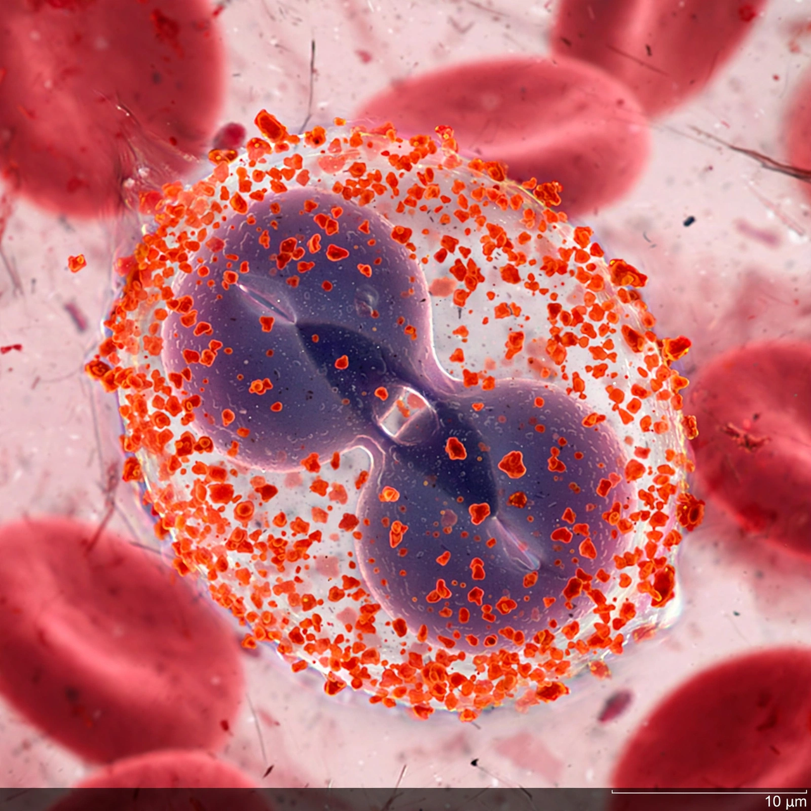

| Eosinophil | |
|---|---|
| Type | White blood cell (granulocyte) |
| Proportion | 1–4% of white blood cells |
| Diameter | 12–17 µm |
| Functions | Defence against parasites; roles in allergy and asthma |

Eosinophils, sometimes called eosinophiles or acidophils, are a variety of white blood cells and one of the immune system components responsible for combating multicellular parasites and certain infections in vertebrates. Along with mast cells and basophils, they also control mechanisms associated with allergy and asthma.
Eosinophils are granulocytes that develop in the bone marrow from hematopoietic stem cells. They are typically 12–17 micrometres in diameter with a bilobed nucleus, and their cytoplasm is filled with large granules that stain bright orange-red with the acidic dye eosin — the feature from which they take their name.
When activated, eosinophils release highly toxic proteins stored in their granules, including major basic protein and eosinophil peroxidase, which damage parasites too large to be phagocytosed. Eosinophils also play a role in the inflammatory response of allergic diseases; an elevated blood eosinophil count (eosinophilia) is associated with allergies, asthma, parasitic infection and certain other disorders.
See also: White blood cell · Basophil · Neutrophil · Asthma